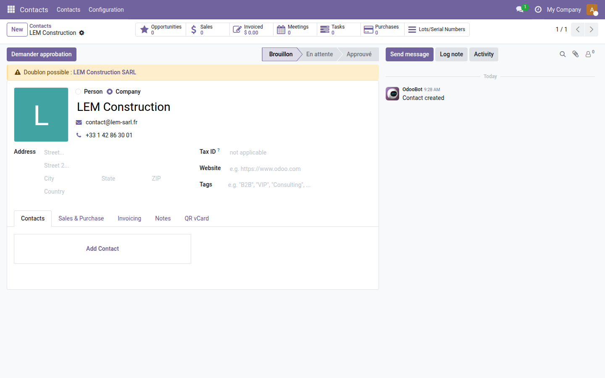
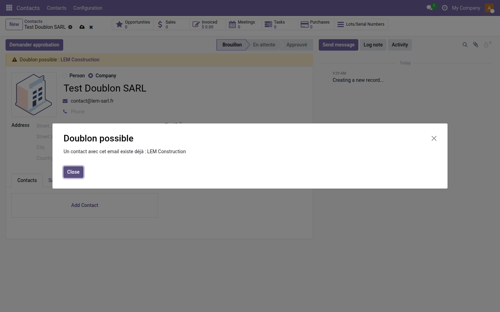
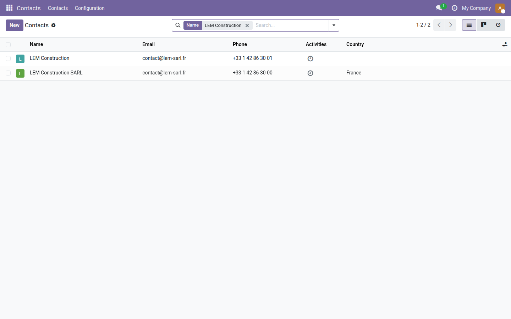

Anti-doublon Contacts
Alertez vos équipes avant qu'un doublon s'installe — sans bloquer la saisie.
Chaque semaine, un contact est saisi deux fois : même email, même téléphone, nom légèrement orthographié différemment. Le résultat est toujours le même — un CRM pollué, des relances envoyées en double, et des équipes qui ne savent plus quelle fiche est la référence. Odoo ne détecte pas nativement ces collisions au moment de la saisie : le doublon est créé sans avertissement, et on ne le découvre que trop tard.
Ce que ça apporte
-
⚡ Alerte instantanée dès la frappe — dès que l'utilisateur saisit un email ou un téléphone déjà connu, une fenêtre d'avertissement affiche le nom du contact existant, avant même d'enregistrer.
-
🔔 Bandeau visible sur la fiche contact — si un doublon est détecté (y compris à la création par import ou API), un bandeau orange "Doublon possible" reste affiché avec un lien cliquable vers le contact existant.
-
✅ Non bloquant, zéro friction — l'alerte informe sans interrompre le workflow. Le contact est toujours créé si l'utilisateur le décide ; la décision reste humaine.
-
🔧 Configurable depuis les Réglages — activez ou désactivez la détection email et la détection téléphone séparément, selon vos besoins métier.
Aperçus réels
1. Bandeau persistant sur la fiche contact
Dès qu'un doublon est détecté (à la création ou à l'enregistrement), un bandeau orange « Doublon possible » s'affiche en haut de la fiche avec un lien cliquable vers le contact existant.

2. Alerte instantanée à la frappe
Lors de la saisie d'un email déjà enregistré, une fenêtre d'avertissement affiche immédiatement le nom du contact en double — avant toute sauvegarde.

3. Doublon visible dans la liste contacts
Les deux contacts partageant le même email apparaissent dans la liste — le doublon est immédiatement identifiable grâce à l'email identique affiché en regard de chaque fiche.

Pourquoi l'adopter
-
Stoppez la pollution à la source — un doublon coûte cher une fois qu'il est dans la base ; il ne coûte rien à éviter si on le signale au bon moment.
-
Respect du processus existant — contrairement à une contrainte SQL bloquante, l'alerte laisse l'équipe gérer les cas légitimes (deux personnes au même numéro, adresse email partagée) sans erreur Odoo.
-
Installation en 2 minutes, gratuit — aucune dépendance lourde, aucune migration de données. Actif immédiatement sur tous les contacts, existants comme nouveaux.
Licence LGPL-3 — compatible Odoo 19.0. Support : support@odooskills.com.